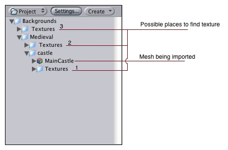
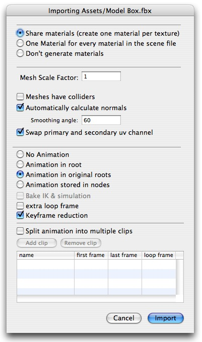

Previous
Previous
Meshes make up a large part of your 3D worlds. You don't build your meshes in Unity, but in another application.
In Unity, we have done everything in our power to make this process as simple as possible. There are a lot of details, but the following should hold:
How do I import objects from my 3D app?
Unity supports importing from a lot of 3D applications. Choose the one you're working with below:
Other applications
Unity can read .FBX, .3DS, .dxf and .obj files, so if your program can export to this format you're home free. FBX exporters for popular 3D packages can be found here.
Hints
- Store textures in a folder called Textures next to the exported mesh. This will guarantee that Unity can always find the Texture and automatically connect the Texture to the Material. For more information, see the Textures reference.
See Also
Textures
Unity will attempt to hook up materials to your imported scenes - Basically, just place textures in a folder called 'Textures' next to the sccene file, or in any folder above it.
|  |
Import settings.
To access the importing settings for a 3D scene file, click the Settings button in the project window, or control-click a scene file and select Import Settings....
|  |
| Property: | Function: |
|---|---|
| Enable this to generate material files near the found texture files. When enabled, different scenes will share the same material settings when they use the same textures. For the precise rules, see Material Generation below. | |
| This will generate materials per scene, so only this scene uses them. | |
| This will not generate materials at all. | |
| Unity's physics system expects 1 meter in the game world to be 1 unit in the imported file. If you like to model at a different scale, this is the place to fix it. | |
| If this is enabled, your meshes will be imported with Mesh Colliders automatically attached. This is recommended for background geometry, but never for geometry you move about. For more info see Colliders below. | |
| Enable this to automatically generate normals for the imported geometry. If enabled, the Smoothing Angle sets how sharp an edge has to be to be treated as a hard edge. | |
| Use this if Lightmapped shaders pick up wrong UV channels. | |
Controls how animations are imported.
| |
| When using IK or simulation in your animation package, enable this. Unity will convert to FK on import. | |
| Perform keyframe reduction on imported animations. You should always use this, as it takes less memory and is faster. | |
| If you have multiple animations in a single file, here you can split it into multiple clips. |
Material Generation
Materials are found based on the following rules:
- Unity gets the name of the main diffuse material bound to the objects in the scene.
- Unity looks for a material with this name in a Folder called 'Materials' next to the scene.
- Unity goes up the project folders, looking for the Material in each 'Materials' folder along the way.
If Unity can't find the Material, it tries to create one from the texture:
- Unity checks for a texture with the correct name in the same folder as the scene.
- Unity checks for a texture with the correct name in a folder called 'Textures' next to the scene.
- Unity goes up the project folders, looking for the correct texture in each 'Textures' folder along the way.
- If Unity finds the texture, it creates a 'Materials' folder next to it and creates a material in there.
Colliders
Unity features two primary types of colliders: Mesh colliders and Primitive colliders. Mesh colliders are imported together with your geometry and are used for background objects. When you enable Meshes Have Colliders in the import settings, the mesh becomes solid as far as the physics system is concerned.
If you are moving the object around (a car for example), you can not use mesh colliders. Instead, you will have to use primitive colliders. In this case you should disable the Meshes Have Colliders setting.
Animations
Animations are automatically imported from the scene. For more details about animation import options see Character-Animation chapter.
Hints
- Merge your meshes together. Make them share materials and textures. This has a huge performance benefit.
- If you need to set up your objects further in Unity (adding physics, scripts or other coolness), save yourself a world of pain and name your objects properly in your 3D application. Working with lots of pCube17 or Box42-like objects is not fun.
- Make your meshes be centered on the world origin in your 3D app. This will make them easier to place in Unity.